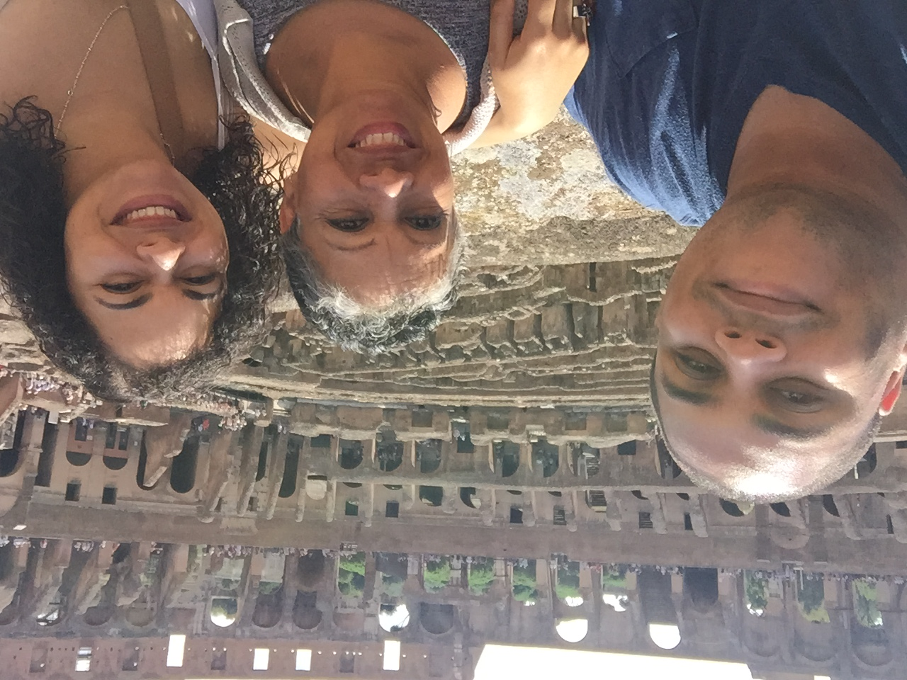
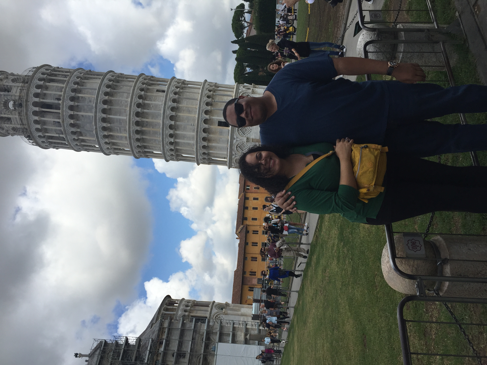

Miami
I was born and raised in Miami, Florida. I have lived in this wonderful city most of my life. I have enjoyed growing up here and experiencing all the different cultures. There are a ton of fun things to do here. This city always has something going on. You have beautiful beaches, tasty food and a great night life. Look at my daughter enjoying the beach!!

New York City
I lived in New York City for almost 5 years. There i lived in Brooklyn and in Manhattan. New York has many things to offer, from broadway shows and plenty of sights to see. There is also a lot of snow up there as well. It gets real cold. Take a look at some snow!!
Italy
I was lucky enough to visit Italy. We visited many cities in this historic country. We visited Rome, Venice, Florence, Pisa and others. The country is full of rich ancient history. It was really amazing to see how much of the architecture is really preserved. Enjoy some italy!!
 